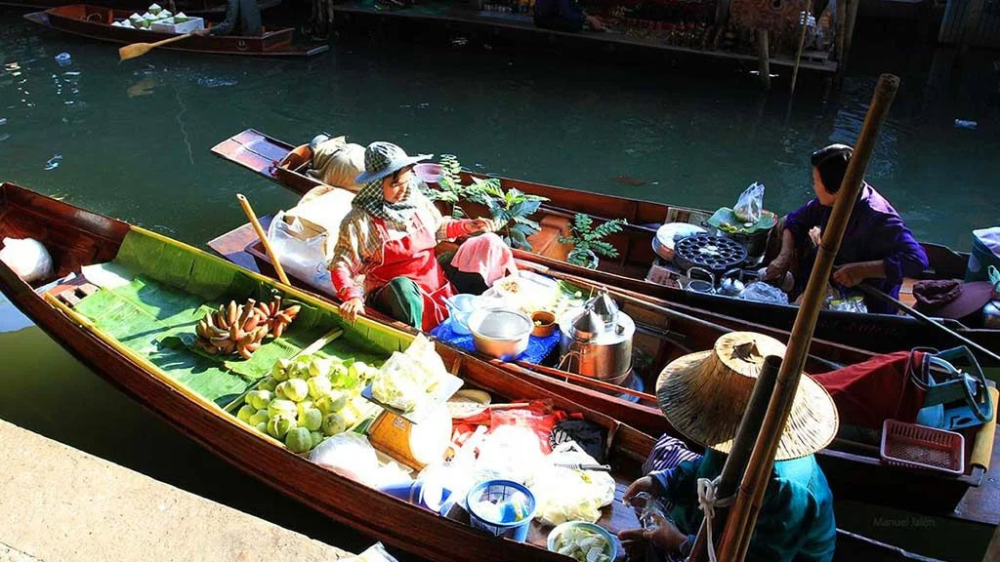
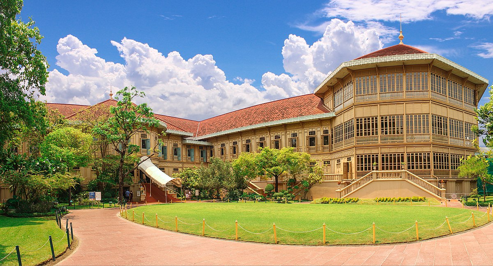
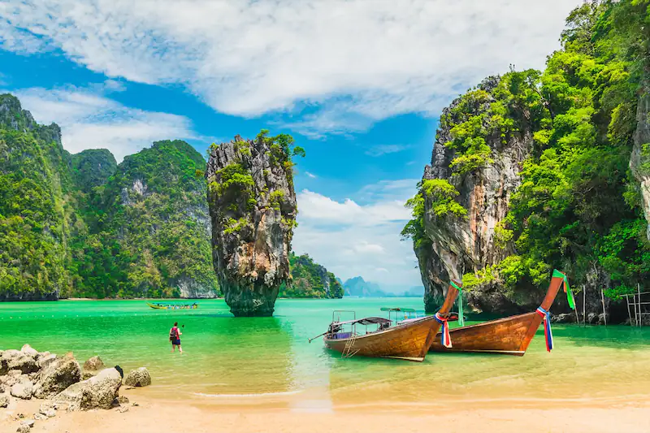
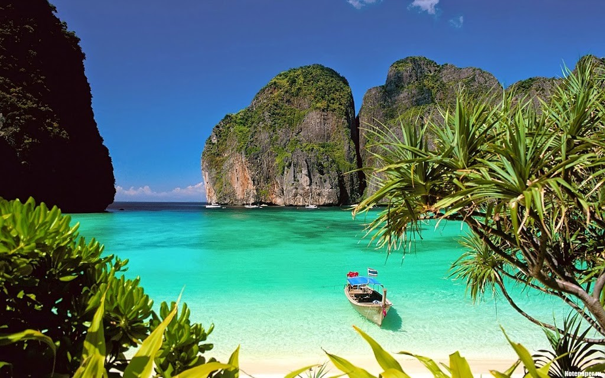

Day 1

Petit déjeunée à l’hôtel, à 7h départ en excursion (matinée) vers Le marché flottant DamnoenSaduak, ce marché est situé à 110 kms à l’ouest de Bangkok, est un endroit très attrayant pour les touristes de voir l'ancien style et le mode traditionnel de la vente.
Day 2

Petit déjeunée à l’hôtel, à 10h départ en excursion (journée) city tours Bangkok en découvrant, palais royale Vimanmek , le temple buddha Whatapo , gemstone workshop . Retours à l’hôtel.
Day 3

Petit déjeuner à l’hôtel puis départ à 7h30 pour une excursion vers Phi Phi Island en s’arrentatà des petites iles avec la possibilité de se détendre et nager dans les eaux limpides: Ling Ao (MonkeyBay), KlangHin et Koh Mai Pai (Bamboo Island), Koh Phi Phi, Phi PhiLeh, la baie de Maya.
Day 4

Petit déjeuner à l’hôtel puis départ à 7h30 pour une excursion (une journée) vers la l’ile extraordinaire de James Bond où «L'Homme au pistolet d'or" avec Roger Moore et Christopher Lee, puis prendre kayak dans les lagunes et les petits passages avec des vues sur les paysages de PhangNgaBay. Déjeuner et possibilité de baigner.
Day 5

Petit déjeuner à l’hôtel puis transfert (terrestre + boat) à l’hôtel a l’ile enKrabi et attribution des chambres.
Day 6
Petit déjeunée à l’hôtel puis libre jusqu’au départ à l’aéroport pour prendre le vol de retour vers tunis.